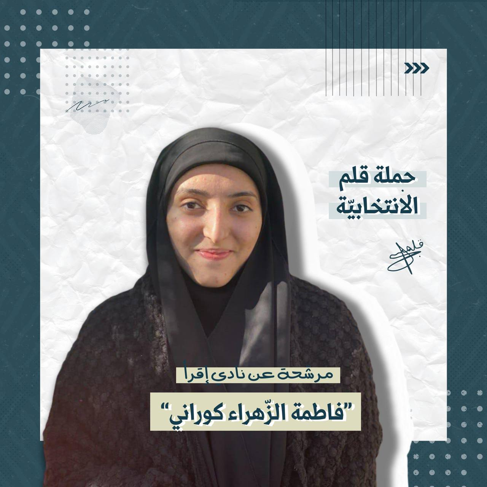
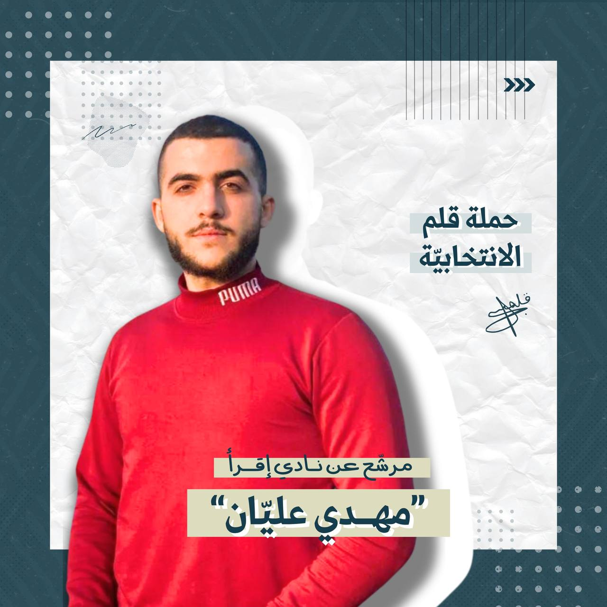
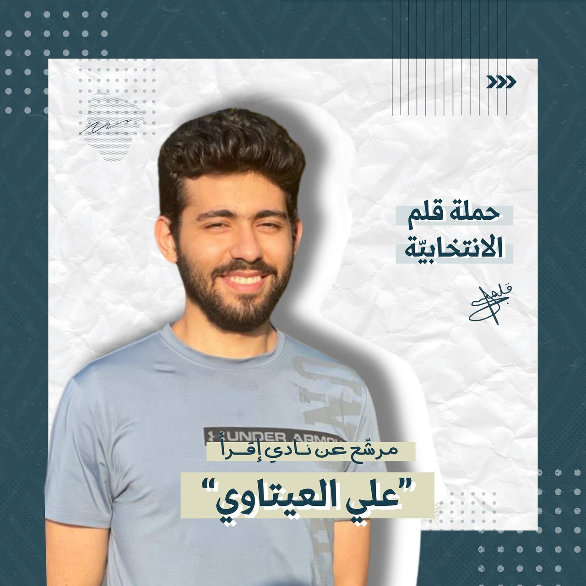
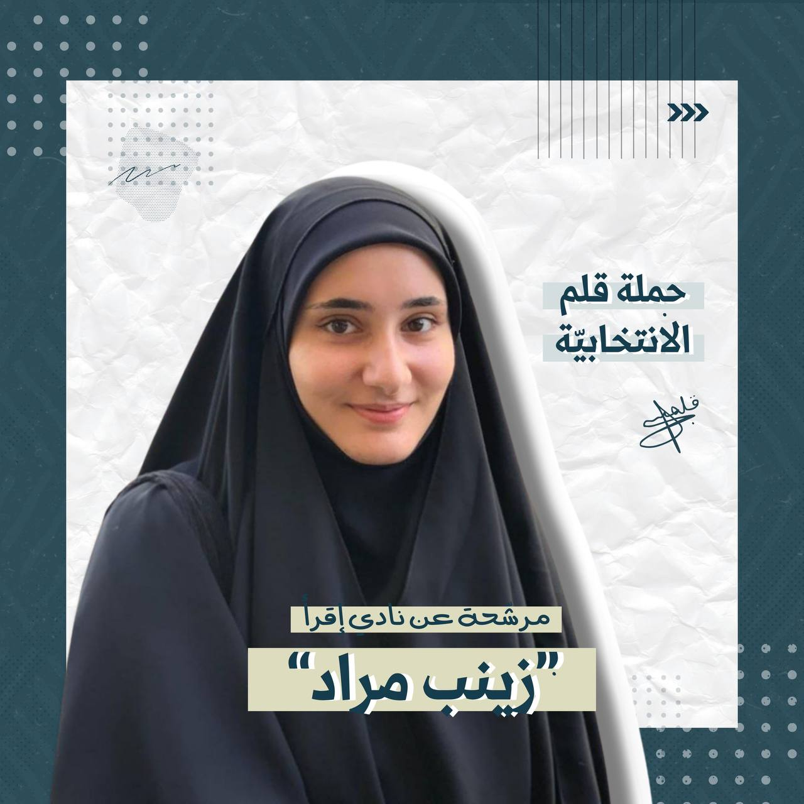
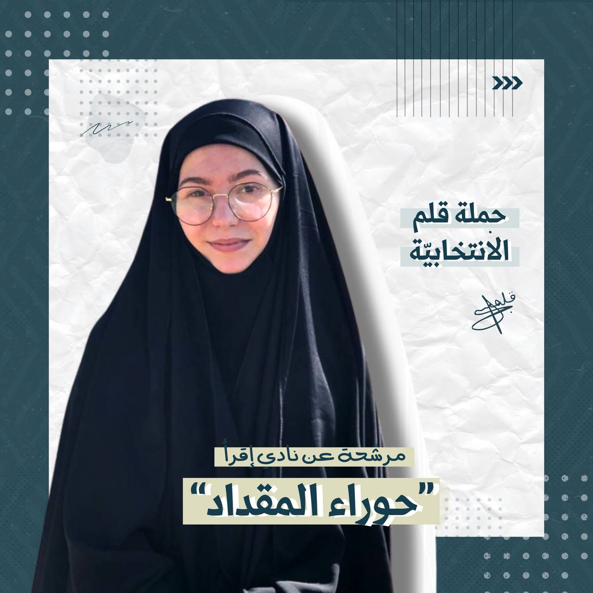

كلية الإعلام
سنة أولى
أبرز الصفات:
ذات أفكار ابداعية / اجتماعية / دقيقة بالعمل والمواعيد / مُدربة / ذات
شخصية قوية
دورات خاضعة لها:
دورة الإلقاء المنبري
دورة التصوير المحترف
دورة فنيّ مختبر المطالعة
دورة الكتابة
دورة ما بين التدريب والتعليم
تجارب وأعمال:
المشاركة في اقامة برنامج صيفي في المدرسة التكاملية بالعراق
تدريب ورش ودورات لمختلف الأعمار بمختلف الانواع وأهمها دورة مختبر
المطالعة التي أمتلك شهادة في تدريبها
قراءة لما يقارب الـ600 كتاب
تنفيذ أنشطة كشفية
إدارة وتنظيم وتصوير ورش ودورات

كلية العلوم
سنة ثانية
التخطيط و الإدارة، حُب التعلّم، كتابة الشعر
دورة خطابة و إلقاء
دورة قيادة جماعات
دورة تخطيط
دورات فنية و إدارية أخرى
رئيس مجلس طلّاب سابق في كليّة إدارة الأعمال(الجامعة اللبنانية)، قائد
كشفي لأكثر من ٣ سنوات، كاتب و مُعدّ للعديد من الفيديوهات الخاصة بعمل
الأندية الطلابية في كليّة إدارة الأعمال(الجامعة اللبنانية)
شعاري للإنتخابات: "سأكون في نادي إقرأ لأعيد للكتاب مكانته بين
أيدي الشباب و لأعطي فرصةً لأفكارنا لكي تبصر النور"

كلية العلوم
سنة ثانية
بعض الصفات:
شغوف بالعلم
الصبر
فهم الآخرين
الاستماع إلى الأخرين
قراءة عشرات الكتب الفلسفية
خريج الجامعة اللبنانية في الرياضيات
المركز الثالث في بطولة الجامعات للشطرنج

كلية الأديان، قسم الترجمة واللغات
السنة الأولى
ابرز الصفات:
لاستماع، انفتاح، الصبر، الاجتماعية
الدورات:
دورة تعليم لغة عربية لغير الناطقين بها
دورة كتابة مستوى ثانٍ (كتابة قصة قصيرة)
متابعة جلسات نقاشات في الكتب
القراءة النشطة وقراءة مواضيع متنوعة
وجود هدف قراءة سنوي

كلية الإعلام
السنة الدراسية: الثّانية
أبرز الصّفات:
مُحبّة للمطالعة وملمة بهذا العالم
أهوى الكتابة ومراجعة الكتب
أسعى للتعمّق أكثر بعالم اللغة العربيّة حيثُ أجد نفسي
دورات خاضعين لها:
ثقافية: جنود - أنصار - معارف ٤ - حوزة لفترة قصيرة من الزّمن
طالبة لسنة في الأدب العربي(لم أكمل في الاختصاص)
أمور تؤهلني لأن أكون مرشحة للنادي:
شاركت بالعديد من الدورات الثقافية
شاركت في دورة كتابة الشعر و القائه و نلت المرتبة الثالثة على منطقة
بيروت
من فريق نادي المطالعة في العام السابق
قرأت عددًا كبيرًا من الكتب وكتبت مراجعات لبعضها
شاركت في أيام الدراسة بتحدّي القراءة الذي ينظّم سنويًا
ألقي الشعر و مطلعة على هذا العالم عبر تواصلي مع بعض الشعراء
خصعت لدورة في كتابة الشعر(لم أكملها)
شاركت في الكتابة في مجلة بقية الله وعُرضت كتاباتي لأكثر من مرّة في
المجلة
قائدة في كشّافة الإمام المهديّ وأعمل على رسخ مفهوم القراءة للعناصر كما
و أتممت دورة أمينة سرّ
كنتُ مندوبة سابقة في الثانوية